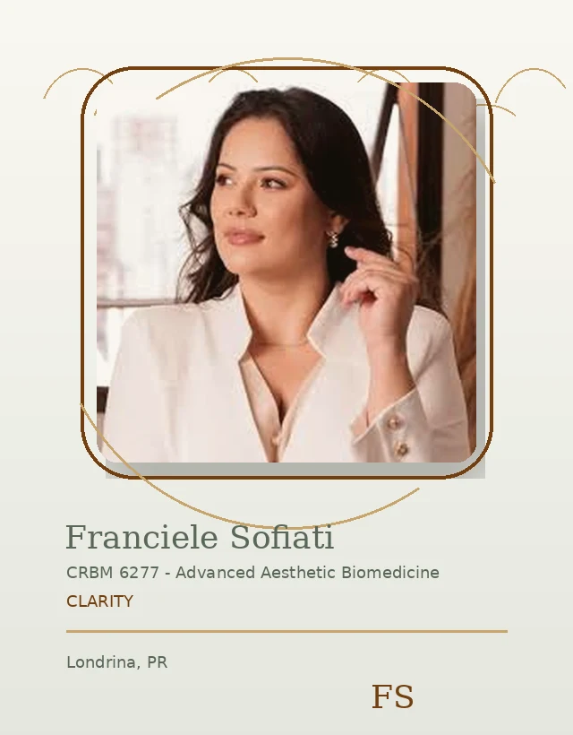
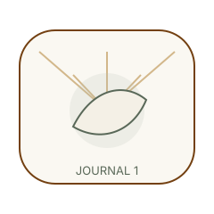

Clarity / Journal Hero
Care journal
Short guidance for better questions, calmer decisions, and clearer expectations.


Clarity / Consultation Bridge
Ready to ask
Bring your questions into a private consultation or message.
Clarity / Featured Article
Featured guide
Start with the most useful topic for your current questions.
Clarity / Skin Category
Skin guidance
Read about routine, texture, sensitivity, and planning.
Clarity / Laser Category
Laser questions
Learn what to discuss before choosing laser care.
Clarity / Care Category
Care planning
Understand how consultation supports personal decisions.
Clarity / Results Category
Result expectations
Read responsible guidance before forming expectations.

Clarity / Editorial Break
Learn before deciding
Good questions make the consultation more useful.

Clarity / Blog Contact CTA
Continue reading
Explore more articles or contact Franciele directly.